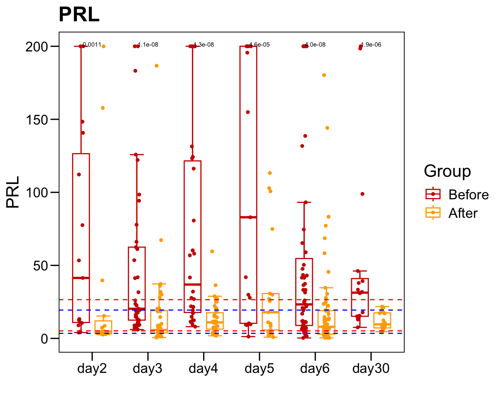

Chapter 4 Post-surgery
4.1 BRE
plot.info <- read.xlsx("data/TableS6.xlsx", startRow = 3)
colnames(plot.info)[1:3] <- c("Sample","Disease","GroupHormone")
colnames(plot.info) <- str_replace_all(colnames(plot.info), regex(".\\(.+"), "")
colnames(plot.info) <- str_replace_all(colnames(plot.info), regex("/"), "_")
sub.1 <- plot.info[, c(1:3, 19, 4:18)]
sub.1$Group <- "Before"
sub.2 <- plot.info[, c(1:3, 19, 20:34)]
sub.2$Group <- "After"
plot.data <- rbind(sub.1, sub.2)
plot.data$Group <- factor(plot.data$Group, levels = c("Before","After") )
plot.data$Time <- factor(as.character(plot.data$Time), levels = c("day2","day3","day4","day5","day6","day30"))
table(plot.data$Time)##
## day2 day3 day4 day5 day6 day30
## 44 82 62 34 126 52p <- ggboxplot(plot.data,
x = "GroupHormone", y = "Lymphocyte._.Monocyte.ratio",
color = "Group", fill = "white",
palette = c("#CE0000","#ffaa00"),
order = names(color.hormone),
width = 0.6, bxp.errorbar = TRUE, bxp.errorbar.width = 0.5,
add = "jitter", add.param = list(color = "Group", size = 1, width = 0.5),
xlab = "", ylab = paste0( "Lymphocyte / Monocyte ratio" ),
main = paste0( "Lymphocyte / Monocyte ratio" ),
legend = "bottom" )
p <- p + stat_compare_means(aes(group = Group, label = paste0(..p.format..)), method = "wilcox.test", paired = T, size = 2 )
p <- p + theme_base() + theme(plot.background = element_blank())
pp <- ggboxplot(plot.data,
x = "Time", y = "Lymphocyte.count",
color = "Group", fill = "white",
palette = c("#CE0000","#ffaa00"),
width = 0.6, bxp.errorbar = TRUE, bxp.errorbar.width = 0.5,
add = "jitter", add.param = list(color = "Group", size = 1, width = 0.5),
xlab = "", ylab = paste0( "Lymphocyte.count" ),
main = paste0( "Lymphocyte.count" ),
legend = "bottom" )
p <- p + stat_compare_means(aes(group = Group, label = paste0(..p.format..)), method = "wilcox.test", size = 2 )
p <- p + theme_base() + theme(plot.background = element_blank())
pp <- ggboxplot(plot.data,
x = "Time", y = "Monocyte.count",
color = "Group", fill = "white",
palette = c("#CE0000","#ffaa00"),
width = 0.6, bxp.errorbar = TRUE, bxp.errorbar.width = 0.5,
add = "jitter", add.param = list(color = "Group", size = 1, width = 0.5),
xlab = "", ylab = paste0( "Monocyte.count" ),
main = paste0( "Monocyte.count" ),
legend = "bottom" )
p <- p + stat_compare_means(aes(group = Group, label = paste0(..p.format..)), method = "wilcox.test", size = 2 )
p <- p + theme_base() + theme(plot.background = element_blank())
pp <- ggboxplot(plot.data,
x = "Time", y = "Lymphocyte._.Monocyte.ratio",
color = "Group", fill = "white",
palette = c("#CE0000","#ffaa00"),
width = 0.6, bxp.errorbar = TRUE, bxp.errorbar.width = 0.5,
add = "jitter", add.param = list(color = "Group", size = 1, width = 0.5),
xlab = "", ylab = paste0( "Lymphocyte / Monocyte ratio" ),
main = paste0( "Lymphocyte / Monocyte ratio" ),
legend = "bottom" )
p <- p + stat_compare_means(aes(group = Group, label = paste0(..p.format..)), method = "wilcox.test", size = 2 )
p <- p + theme_base() + theme(plot.background = element_blank())
p
sub <- plot.data[which(!is.na(plot.data[, "PRL" ])), ]
sub.1 <- table(sub$Sample)
sub.1 <- sub.1[sub.1 > 1]
plot.data.sub <- plot.data[plot.data$Sample %in% names(sub.1), ]
table(plot.data.sub$Time)/2##
## day2 day3 day4 day5 day6 day30
## 15 37 30 17 55 20p <- ggboxplot(plot.data.sub,
x = "Time", y = "PRL",
color = "Group", fill = "white",
palette = c("#CE0000","#ffaa00"),
#order = c("FirstVisit", "LastVisit"),
width = 0.6, bxp.errorbar = TRUE, bxp.errorbar.width = 0.5,
add = "jitter", add.param = list(color = "Group", size = 1, width = 0.5),
xlab = "", ylab = paste0( "PRL" ),
main = paste0( "PRL" ),
legend = "bottom" )
p <- p + stat_compare_means(aes(group = Group, label = paste0(..p.format..)), method = "wilcox.test", paired = T, size = 2 )
p <- p + theme_base() + theme(plot.background = element_blank())
p <- p + geom_hline(yintercept = normal.cutoff.male$PRL, linetype="dashed", color = "blue")
p <- p + geom_hline(yintercept = normal.cutoff.female$PRL, linetype="dashed", color = "red")
p
sub <- plot.data[which(!is.na(plot.data[, "GH" ])), ]
sub.1 <- table(sub$Sample)
sub.1 <- sub.1[sub.1 > 1]
plot.data.sub <- plot.data[plot.data$Sample %in% names(sub.1), ]
table(plot.data.sub$Time)/2##
## day2 day3 day4 day5 day6 day30
## 15 37 30 17 55 20p <- ggboxplot(plot.data.sub,
x = "Time", y = "GH",
color = "Group", fill = "white",
palette = c("#CE0000","#ffaa00"),
#order = c("FirstVisit", "LastVisit"),
width = 0.6, bxp.errorbar = TRUE, bxp.errorbar.width = 0.5,
add = "jitter", add.param = list(color = "Group", size = 1, width = 0.5),
xlab = "", ylab = paste0( "GH" ),
main = paste0( "GH" ),
legend = "bottom" )
p <- p + stat_compare_means(aes(group = Group, label = paste0(..p.format..)), method = "wilcox.test", paired = T, size = 2 )
p <- p + theme_base() + theme(plot.background = element_blank())
p <- p + geom_hline(yintercept = normal.cutoff.male$GH, linetype="dashed", color = "blue")
p <- p + geom_hline(yintercept = normal.cutoff.female$GH, linetype="dashed", color = "red")
psub <- plot.data[which(!is.na(plot.data[, "ACTH" ])), ]
sub.1 <- table(sub$Sample)
sub.1 <- sub.1[sub.1 > 1]
plot.data.sub <- plot.data[plot.data$Sample %in% names(sub.1), ]
table(plot.data.sub$Time)/2##
## day2 day3 day4 day5 day6 day30
## 15 37 30 17 55 20p <- ggboxplot(plot.data.sub,
x = "Time", y = "ACTH",
color = "Group", fill = "white",
palette = c("#CE0000","#ffaa00"),
#order = c("FirstVisit", "LastVisit"),
width = 0.6, bxp.errorbar = TRUE, bxp.errorbar.width = 0.5,
add = "jitter", add.param = list(color = "Group", size = 1, width = 0.5),
xlab = "", ylab = paste0( "ACTH" ),
main = paste0( "ACTH" ),
legend = "bottom" )
p <- p + stat_compare_means(aes(group = Group, label = paste0(..p.format..)), method = "wilcox.test", paired = T, size = 2 )
p <- p + theme_base() + theme(plot.background = element_blank())
p <- p + geom_hline(yintercept = normal.cutoff.male$ACTH, linetype="dashed", color = "blue")
p <- p + geom_hline(yintercept = normal.cutoff.female$ACTH, linetype="dashed", color = "red")
p4.3 scRNA-seq
hypo <- readRDS("data/20250925_PitNETs_scRNA_tissue_s63.rds")
p <- DimPlot(hypo, reduction = "umap", pt.size = pt.size, raster = set.raster, label = T, label.size = 4,
group.by = "Sample", cols = color.lib, shuffle = T) + theme_few()
ggsave(paste0(out.path, "/5.UMAP.sample.png"), p, width = 11, height = 7, dpi = 300)
p <- DimPlot(hypo, reduction = "umap", pt.size = pt.size, raster = set.raster, label = T, label.size = 3,
group.by = "CellType", cols = color.tumor) + theme_few()
ggsave(paste0(out.path, "/5.UMAP.CellType.png"), p, width = 10, height = 7, dpi = 300)
p <- DimPlot(hypo, reduction = "umap", pt.size = pt.size, raster = set.raster, label = T, label.size = 4,
group.by = "Branch", cols = color.branch) + theme_few()
ggsave(paste0(out.path, "/5.UMAP.Branch.png"), p, width = 8.5, height = 7, dpi = 300)4.4 inferCNV
infercnv_obj <- infercnv::CreateInfercnvObject(raw_counts_matrix=count.cnv,
gene_order_file=genes.cnv,
annotations_file=annot.cnv,
ref_group_names = rev(c("Normal_cell")) )
infercnv_obj_default = infercnv::run(
infercnv_obj,
cutoff=0.1, # cutoff=1 works well for Smart-seq2, and cutoff=0.1 works well for 10x Genomics
out_dir=out.path.cnv,
cluster_by_groups=TRUE,
plot_steps=FALSE,
denoise=TRUE,
HMM=FALSE,
no_prelim_plot=FALSE,
png_res=300,
output_format = "pdf"
)
saveRDS(infercnv_obj, file = paste0(out.path.cnv, "/infercnv.CNV.obj.rds"))